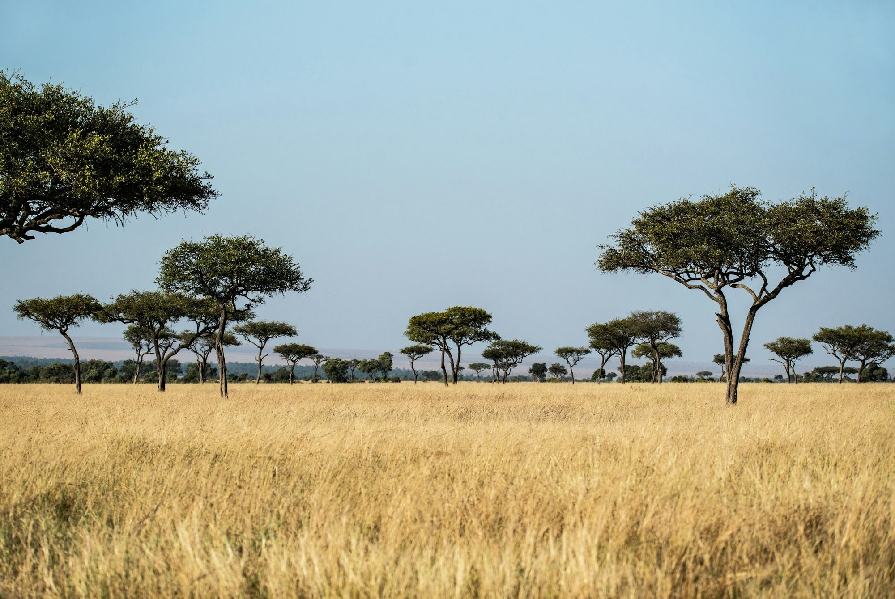
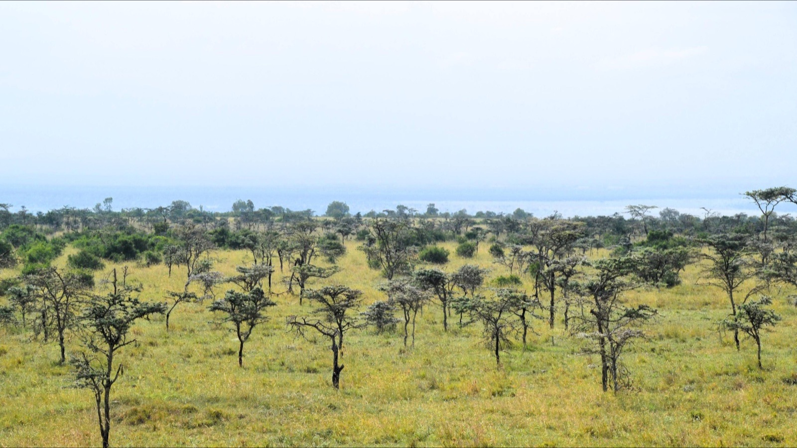
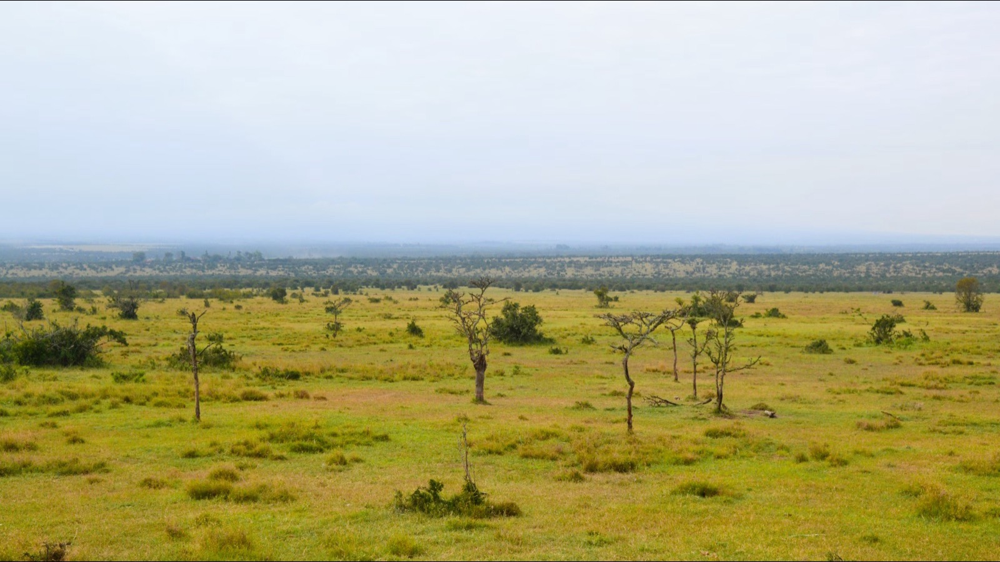
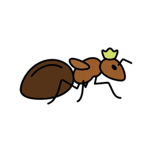
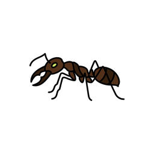
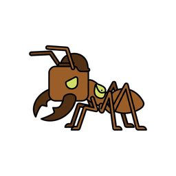
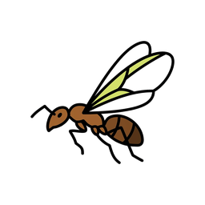
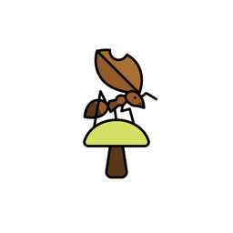

Base de connaissance · Myrmécologie
Vingt millions de milliards d'individus.
Et pas un seul chef.
Ce que des colonies sans cerveau, sans plan et sans ordre hiérarchique parviennent malgré tout à construire, décider et défendre.
Quatre entrées
Ce que cette base contient
Quatre façons de regarder la même bête. Cliquez une carte pour l'aperçu, puis ouvrez l'article complet.
Étude de cas · Laikipia, Kenya
Un arbre qui siffle pour prévenir les éléphants
Crematogaster mimosae mesure un centimètre et vit dans les épines creuses des acacias d'Afrique de l'Est. L'éléphant, lui, avale quatre-vingt-dix kilos de végétation par jour — et raffole précisément de ces acacias.
La colonie n'a aucune chance en combat frontal. Elle a donc trouvé autre chose : en perçant les galles épineuses de petits trous exposés au vent, elle transforme l'arbre en instrument à vent. Quand l'acacia siffle, l'éléphant sait qu'il est habité — et passe son chemin.



Avec Crematogaster Après l'invasionQuand la fourmi à grosse tête, invasive, élimine Crematogaster, l'acacia perd sa garde rapprochée. Éléphants et girafes le broutent sans obstacle, et le paysage s'ouvre. Glissez le curseur pour mesurer l'écart.
Anatomie d'une colonie
Cinq métiers, une seule bête
L'espérance de vie ne se négocie pas : elle découle de la fonction. Chaque caste est un organe du même corps.

La reine

L'ouvrière

Le soldat

Le mâle

L'agricultrice
Où ça se passe
Six endroits où la fourmi bat un record
Sélectionnez un point pour afficher l'espèce, le phénomène observé et les chiffres.

Crematogaster mimosae
Laikipia, Kenya · savane d'acacias
Perce les galles épineuses de l'acacia pour les transformer en sifflets et tenir les grands herbivores à distance. Sans elle, la savane se referme.
Mise à l'échelle
Douze mégatonnes de carbone qui marchent
En 2022, une équipe internationale a repris à zéro le comptage des fourmis du globe à partir de 489 études de terrain. Verdict : environ vingt millions de milliards d'individus, pour 12,3 mégatonnes de carbone sec.
C'est plus que tous les oiseaux et tous les mammifères sauvages de la planète réunis, et l'équivalent d'environ un cinquième de la biomasse humaine. Rapporté à la population mondiale, cela fait à peu près 2,5 millions de fourmis par être humain.
la part des fourmis
- Bétail100 Mt
- Humains60 Mt
- Fourmis12,3 Mt
- Mammifères sauvages7 Mt
- Oiseaux sauvages2 Mt
En vrac
Sept faits difficiles à croire
100 000
œufs pondus par jour par une reine Dorylus. La fourmi noire de jardin, elle, plafonne à trente.
600 m²
La surface d'une fourmilière exhumée au Brésil, six mètres de profondeur, tunnels et chambres compris.
30 ans
L'espérance de vie d'une reine, contre trois ans pour une ouvrière et quelques semaines pour un mâle.
1 seule fois
La reine s'accouple une unique fois, stocke le sperme, et s'en sert pour pondre jusqu'à sa mort.
À la carte
Elle choisit le sexe de sa descendance : œuf fécondé pour une femelle, non fécondé pour un mâle.
Antibiotiques
Certaines colonies produisent leurs propres antimicrobiens et se les appliquent mutuellement.
500 000
Le nombre d'animaux qu'une colonie de légionnaires peut tuer en une seule journée de chasse.